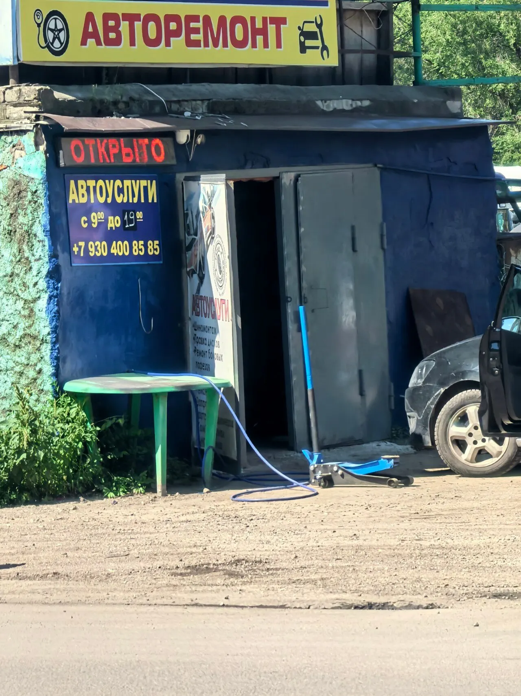
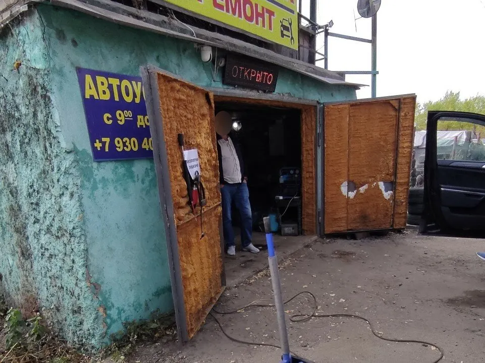
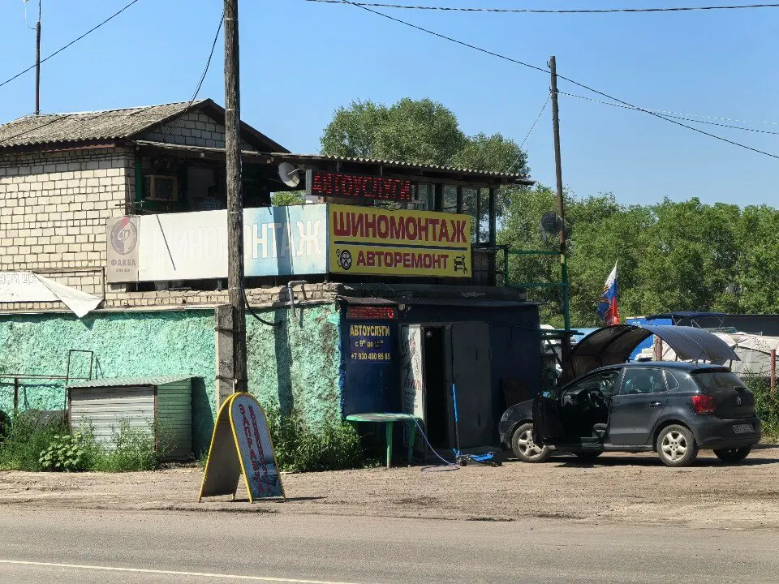
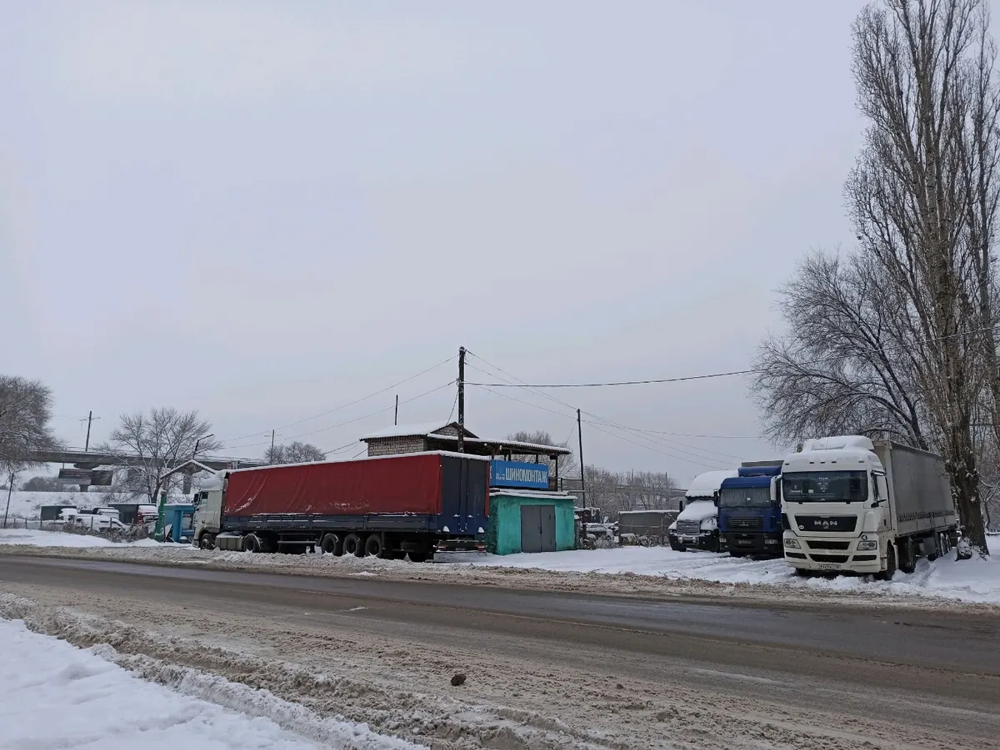

Шиномонтаж · Автосервис · Воронеж
Шиномонтаж и автосервис в Воронеже – чиним то, что не берут другие
Остужева, 1В. Ежедневно 09:00–19:00. 53 отзыва на Яндекс.Картах со средней оценкой 5,0.

- Рейтинг 5,0 · 53 отзыва на Яндекс.Картах
- Ежедневно 09:00–19:00, Остужева, 1В
- Мастера Алексей и Сергей – их благодарят в отзывах
Услуги
Шиномонтаж и ремонт любой сложности, в том числе боковые порезы. Точную стоимость назовут по телефону – зависит от повреждения.
Шиномонтаж
- Ремонт проколов и порезоввключая боковые порезыуточнить
- Переобувка комплектаснять, перебортовать, отбалансироватьуточнить
- Балансировка колёсгрузики включеныуточнить
Автосервис
- Ремонт ходовойдиагностика и замена узловуточнить
- Заправка и ремонт автокондиционерапроверка утечекуточнить
- Замена маслав двигателе и коробкеуточнить
- Компьютерная диагностикачтение ошибок всех системуточнить
Прайса на карточке нет – цену называют по телефону до начала работ. Боковой порез, который везде отказываются чинить, здесь берут.
Цены для примера. В вашем сайте будут ваши.
Как проходит ремонт
- 01
Звоните или заезжаете
Остужева, 1В – сразу посмотрят повреждение и назовут цену.
- 02
Диагностируют при вас
Прокол, порез, ходовая или кондиционер – покажут, что именно не так.
- 03
Ремонтируют
«Уже не раз обращаюсь к этим ребятам» – пишут в отзывах про Алексея и Сергея.
- 04
Отдают машину в срок
Время ожидания хвалят в 100 % отзывов.



Что обещают отзывы
«Уже не раз обращаюсь к этим ребятам»
Татьяна С. – про мастеров Алексея и Сергея.
«Не везде есть ремонт таких неисправностей»
К Марина – боковой порез, который брать отказывались.
«Переделал некачественные латки после другого сервиса»
Михаил Гончаров – про Сергея.
Отзывы с Яндекс.Карт
«Благодарю Алексея и Сергея за качественную работу. Уже не раз обращаюсь к этим ребятам. Прокол колеса…»
Татьяна С. · 28 марта
«Получила боковой порез на колесе. Не везде есть ремонт таких неисправностей. Покупать новую резину…»
К Марина · 30 января 2025
«Спасибо Сергею за хорошо выполненную работу, переделал некачественные латки после другого…»
михаил гончаров · 16 мая 2025
Отзывы с карточки на Яндекс.Картах, без правок.
Контакты
- Адрес
- улица Остужева, 1В, Воронеж
- Часы
- Ежедневно 09:00–19:00
- Телефон
- +7 (930) 400-85-85